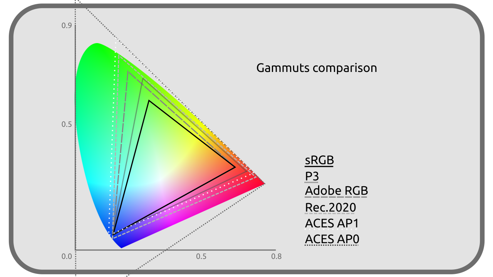

G - Liste des paramètres d’espaces colorimétriques
Voici la liste des différentes primaires, points blancs et courbes de transfert partagés par les différents espaces colorimétriques, ainsi que leurs comparaisons.
G.1 - Primaires

RGB / sRGB / Rec. 709
|
R |
G |
B |
| X |
0,64 |
0,30 |
0,15 |
| Y |
0,33 |
0,60 |
0,06 |
| Z |
0,03 |
0,1 |
0,79 |
Rec. 601
|
R |
G |
B |
| X (NTSC) |
0,63 |
0,31 |
0,155 |
| Y (NTSC) |
0,34 |
0,595 |
0,007 |
| Z (NTSC) |
0,03 |
0,095 |
0,775 |
| X (PAL) |
0,64 |
0,29 |
0,15 |
| Y (PAL) |
0,33 |
0,60 |
0,06 |
| Z (PAL) |
0,03 |
0,11 |
0,79 |
Rec. 2020
|
R |
G |
B |
| X |
0,708 |
0,17 |
0,131 |
| Y |
0,292 |
0,797 |
0,046 |
| Z |
0,0 |
0,033 |
0,823 |
P3
|
R |
G |
B |
| X |
0,68 |
0,265 |
0,15 |
| Y |
0,32 |
0,69 |
0,06 |
| Z |
0,00 |
0,045 |
0,79 |
AP0 / ACES2065-1
|
R |
G |
B |
| X |
0,7347 |
0,0 |
0,001 |
| Y |
0,2653 |
1,0 |
-0,77 |
AP1 / ACEScg / ACEScc
|
R |
G |
B |
| X |
0,713 |
0,165 |
0,128 |
| Y |
0,293 |
1,830 |
0,044 |
Adobe RGB
|
R |
G |
B |
| X |
0,64 |
0,21 |
0,15 |
| Y |
0,33 |
0,71 |
0,06 |
G.2 - Blancs
D65 / RGB / sRGB / Rec. 601 / Rec. 709 / Display P3 / Adobe RGB
|
Blanc |
| x |
0,3127 |
| y |
0,3290 |
| CIE |
D65 |
DCI-P3
ACES / ACES2065-1 / ACEScg / ACEScc
|
Blanc |
| x |
0,32168 |
| y |
0,33767 |
| CIE |
proche de D60 |
G.3 - Courbes de transfer
Linéaire / RGB / ACES2065-1 / ACEScg
Transfert Linéaire
sRGB / Display P3
Proche en moyenne d’un Gamma 2.2, avec en réalité un transfert linéaire pour les luminances linéaires inférieures à 0,0031308 puis un Gamma 2,4 décalé.
2.4 / Rec. 601 / Rec. 709 / Rec. 2020
Gamma 2,4
2.2 / Adobe RGB
Gamma 563/256 soit 2,199 218 75.
ACEScc
.